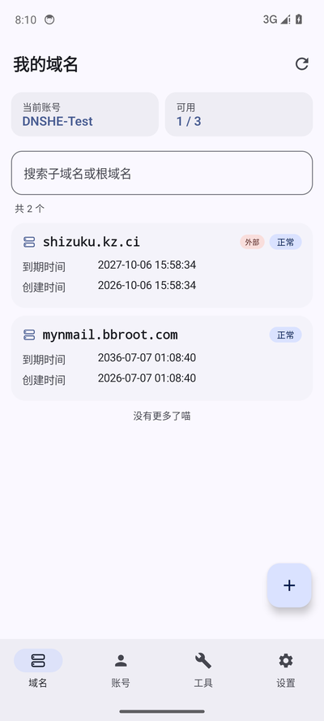
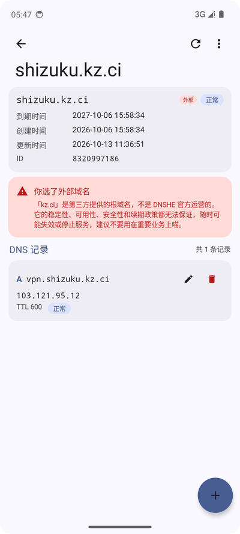
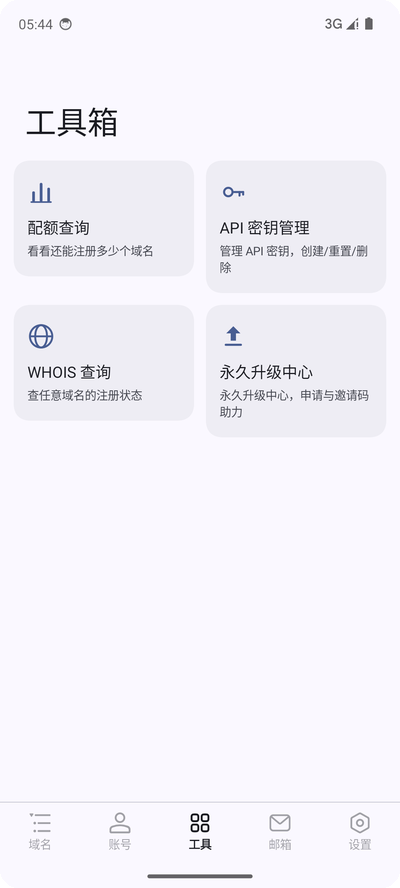
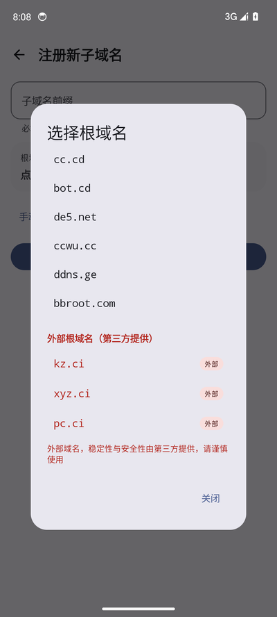
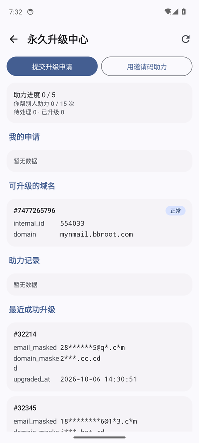
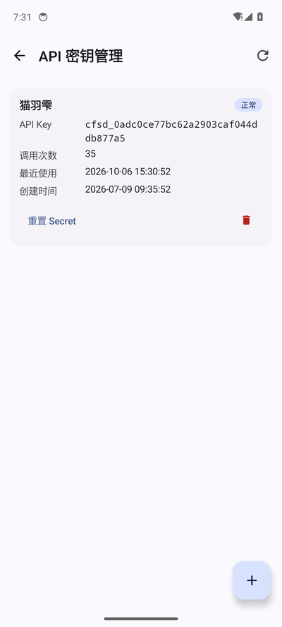
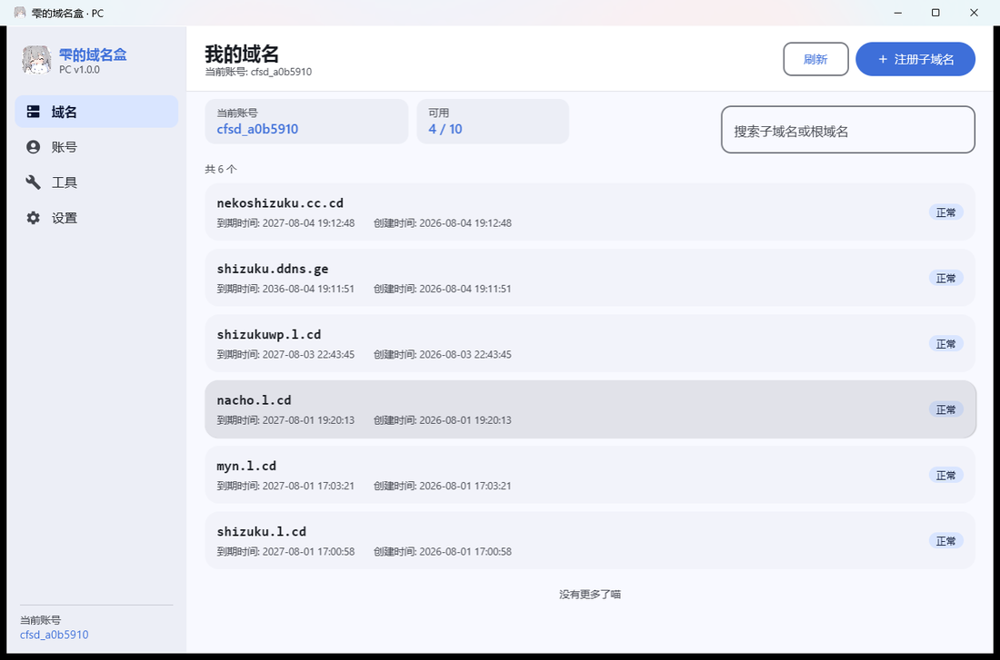
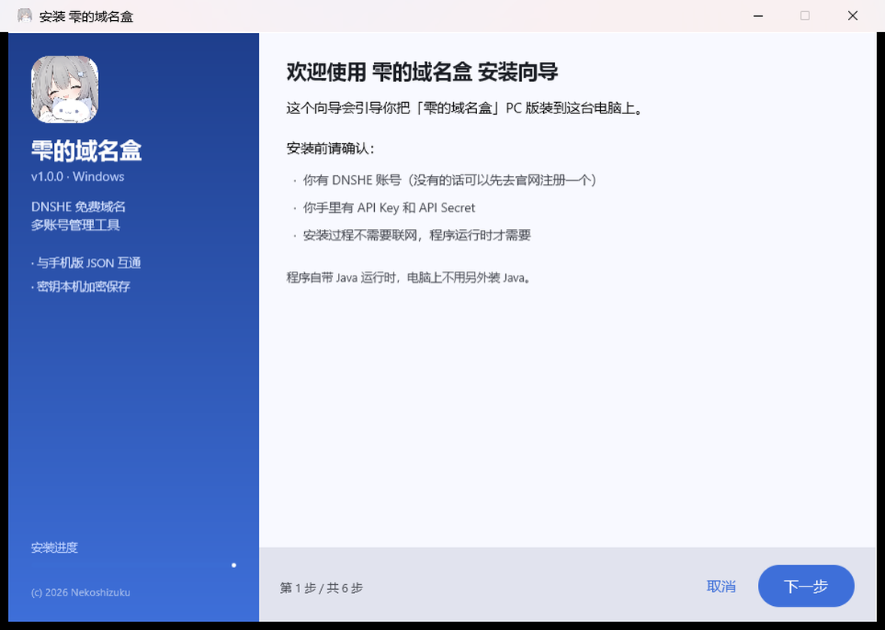

多账号管理
添加任意数量的 DNSHE 账号，顶部一键切换。每个账号独立保存密钥、默认根域名和备注，互不干扰。
一个账号一个密钥太麻烦？把它们收进一个盒子。 注册子域名、增删改查解析记录、查配额、看 Whois、申请永久升级—— 安卓和 Windows 双端体验一致，备份文件还能互相导入。

从注册域名到日常改解析，不用再反复登录网页后台。
添加任意数量的 DNSHE 账号，顶部一键切换。每个账号独立保存密钥、默认根域名和备注，互不干扰。
在自己的根域名下注册新的免费子域名。官方根域名和外部根域名分开标注，外部域名有醒目的风险提示。
A / AAAA / CNAME / MX / TXT / NS / SRV / CAA 全类型增删改查，改完立刻生效，不用逐个打开网页。
安卓用 Keystore、Windows 用 DPAPI，按当前用户加密保存。密钥不会以明文落在磁盘上，也不会上传到任何服务器。
导出的备份格式两端逐字段一致。明文备份便于查看，口令备份用 PBKDF2 + AES-256-GCM 加密，手机导电脑、电脑导手机都行。
实时查看域名配额用量、API 密钥列表和调用次数，密钥直接生成、复制、删除。
查询域名注册状态，管理永久升级申请。都能在 App 里完成，不用来回切浏览器。
界面中英文随时切换，亮色暗色跟随系统。域名盒自己也是用这套设置记住你的偏好。
mail.v.cd 开放了 API 但没出文档，我们把它逆向出来做成了客户端：收发邮件、抄送密送、HTML 正文、附件下载、SPF/DKIM/DMARC 验签结果显示。
安卓版和 Windows 版功能完全对齐，切换设备不用重新适应。







两个版本数据格式完全兼容，可以同时使用。
02CD483A63319645752757C92EE6412C22E8943A1AE47C1AFDC693B953D1F583
首次安装需要在系统设置里允许「安装未知来源应用」。
2F6427D7DA2E287046EA9BF24968AE91AB4462C7311FAA7FADF6E7A45E6FB701
程序自带 Java 运行时，电脑上不需要另外装 Java。
本项目是 DNSHE 免费域名的第三方管理工具，与 DNSHE 官方没有隶属关系。 使用前请先在 DNSHE 官网 注册账号并获取 API 密钥。
登录 my.dnshe.com， 在账号设置里创建 API Key 和 API Secret。App 里添加账号时把这两个值填进去，点「测试连接」确认无误后保存即可。
不会。密钥只保存在你自己的设备上：安卓用系统 Keystore、Windows 用 DPAPI， 按当前用户加密存储。App 唯一的网络请求就是直接调用 DNSHE 官方 API，没有任何中间服务器，也没有遥测上报。
通过备份文件手动同步。两端导出的 JSON 格式逐字段一致，在安卓版导出后传到 Windows 版导入即可， 反过来也一样。备份可以选择明文（方便查看）或口令加密（PBKDF2-HMAC-SHA256 + AES-256-GCM）。
DNSHE 的根域名分两类。官方根域名由 DNSHE 直接运营；外部根域名由第三方提供， 可用性和续期政策可能随时变化。本工具会把外部根域名用醒目的标签标出来并在选择时给出确认提示， 避免你误选之后域名突然失效。
因为程序自带了裁剪过的 Java 运行时（约 66 MB），装完就能直接用， 电脑上不需要预先安装 Java。安装程序还内置了卸载程序，可以在系统「设置 → 应用」里正常卸载。
会装到 Program Files 并弹出 UAC 提权确认，装好后这台电脑上的所有用户都能用。
选「仅为我安装」则装到你的用户目录，不需要管理员权限。卸载时可以选择保留账号数据或彻底删除。
A、AAAA、CNAME、MX、TXT、NS、SRV、CAA，覆盖 DNSHE API 支持的全部类型， 可以新增、修改、删除，也可以给记录加备注。
是。代码以 MIT 许可开源，托管在两个地方，内容完全同步：
遇到问题或者有功能建议，欢迎直接到仓库里提 Issue。